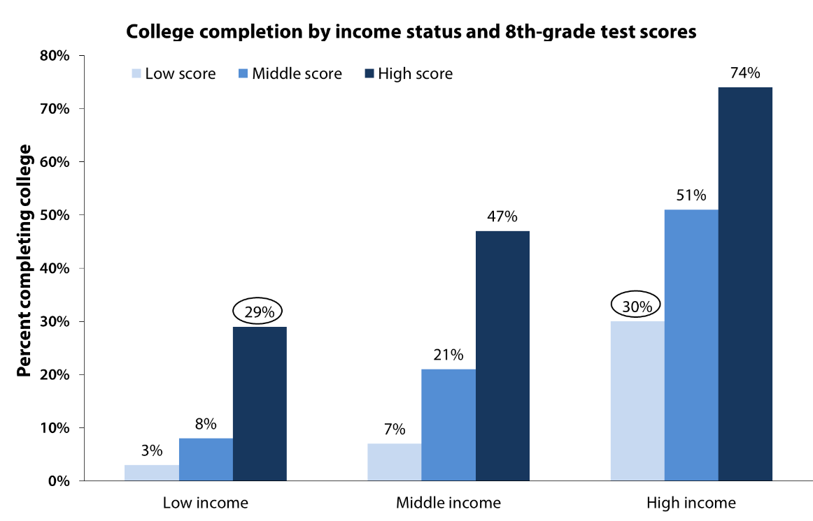

Schools in the US currently have a major diparity in how funds are allocated to them. Schools in higher economic districts have access to the latest learning material, the best teachers, and in turn are the most desireable school to send a child. This leaves schools with a lesser bullet in the dust, often with hand-me-down books and teachers just itching to leave to a better and often time higher paying position in a richer district. My system aims to solve this by rather than tying the budget of a school to the school itself, it instead is split among students in the district. This is one of the areas where this would have to be done federaly or by the state rather than the local district.
We want to avoid the quality gap between high and low income schools. When it comes to low income schools, there is a substanctial drop in graduates as well as career paths when compared to those of more affluent neighborhoods. A childs education should not be impacted by the economic state of their family or surrounding area

Each school will get the same baseline funding from the state. The remainder of the funding is split evenly among each student that is currently, or will be, enrolled for the school year. Parents are able to pick and choose which school they want their chilld to attend, this drives competition between schools to offer the best experience for its students. Parents then have a say in how their child's allocated money is spent at the school, this can be done through school boards, conferances, and seminars. Doing this will get parents involved with the school and be more proactive in their childs education. Keeping spending local is very important to assure a quality education
This part of my education plan has the most involvement from the state in order to keep things fair. The state will maintain well regulated systems in order to keep schools competing fair. Schools will follow strict guidelines, such as only accepting as many students as it can reasonably hold, in order to not overcrowd classrooms to gain more funding from a high number of students. Schools should be encouraged to hold fundraisers and get support from local businesses as well. When it comes to school spending, the state should have minimum say and the voice of the school faculty as well as the parents should be strong.
"By increasing per pupil spending by 22 percent during low-income
students’ years in school, states could completely eliminate the
achievement gap between children from affluent and economically
disadvantaged homes."
- American University, D.C.
" More than twice as many students graduating from a low-poverty
high school in 2012 graduated from colleges six years later than
those from a high-poverty schools (53% for the former group, 21% for
the latter). "
- Michael T. Nietzel